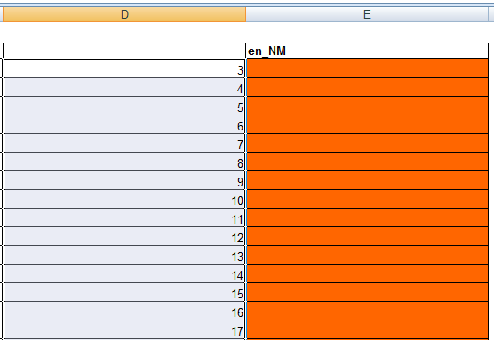
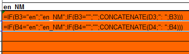
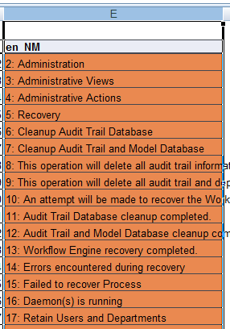
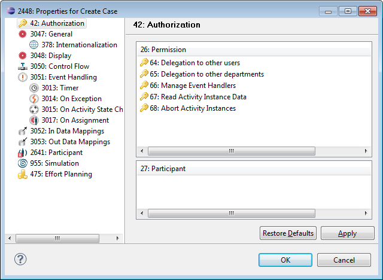
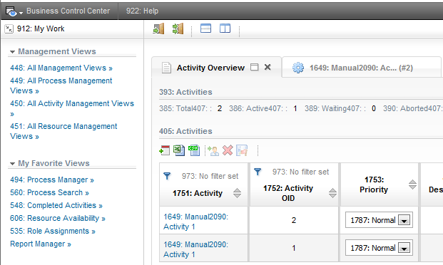

In some cases it might be difficult to identify where in the modeler user interface or in the Portal layout the keys to be translated are displayed. For this purpose, create an artificial resource bundle, e.g. called en_NM, containing numbered keys followed by the default English key entries. Use this bundle to easily identify the keys you like to translate in the Portal or modeler.
To create this artificial keys, do the following:
# locales to export from XLS export.locales=ja,en_NM # locales to import into XLS import.locales=en,ja,en_NM
Now edit the Excelsheet modeler-messages.xls or portal-messages.xls, depending on if you like to see the identifying keys in the Portal or the modeler.

=IF(B<linenumber>="en";"en_NM";IF(B<linenumber>="";"";CONCATENATE(<column with numbers><linenumber>;": ";B<linenumber>)))For example, if the column containing the line numbers is D, enter in the third and forth line of your en_NM column the following formula and apply it to the rest of the column:
=IF(B3="en";"en_NM";IF(B3="";"";CONCATENATE(D3;": ";B3))) =IF(B4="en";"en_NM";IF(B4="";"";CONCATENATE(D4;": ";B4)))

This formula adds the row number followed by the English key of the according row, taking in account headings for the locale and empty rows.
Call EclipseImport.bat to add the resource bundles to your Stardust Eclipse installation.
Now you can check labels, options, messages etc. and identify them accordingly in your Excelsheet. To display the keys with the artificial locale:


Note:
In case you face problems adding a user defined language in your browser,
add any language that you will not use in any case and use its locale instead
of en_NM. Replace en_NM with the chosen locale for the export.locales
and import.locales properties in your i18n.properties
file. In the Excelsheet, replace the en_NM entry in the column
with your chosen locale. Then call EclipseImport.bat again.